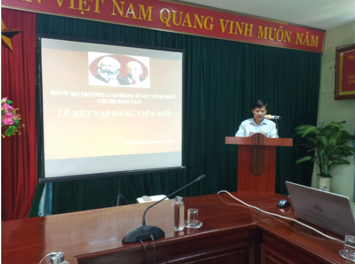
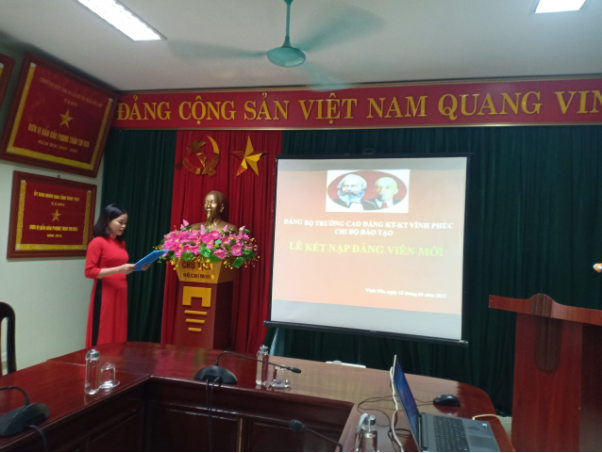
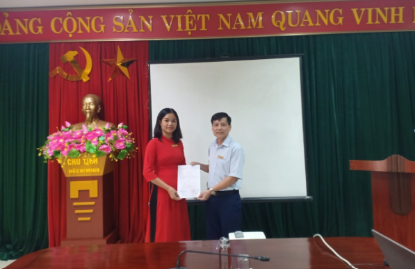
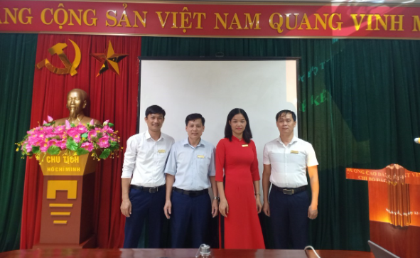

CHI BỘ ĐÀO TẠO TỔ CHỨC LỄ KẾT NẠP ĐẢNG VIÊN NĂM 2022
Thực hiện Quyết định số 2677- QĐ/TU ngày 05/9/2022 của Thành ủy Vĩnh Yên về việc kết nạp Đảng viên mới cho quần chúng Phạm Thị Ngọc Lân, chiều ngày 13/09/2022 tại trường Cao đẳng Kinh tế - Kỹ thuật Vĩnh Phúc, Chi bộ Đào tạo tổ chức lễ kết nạp Đảng viên theo đúng quy định. Lễ kết nạp diễn ra trong không khí trang nghiêm và theo đúng các trình tự, thủ tục được quy định.
Tham dự và chỉ đạo buổi Lễ, có đồng chí Nguyễn Duy Sỹ - Bí thư Chi bộ cùng toàn thể các đồng chí Đảng viên Chi bộ Đào tạo.Kết nạp Đảng viên mới là nhiệm vụ thường xuyên, có ý nghĩa quan trọng trong công tác xây dựng Đảng, góp phần phát triển, nâng cao chất lượng và sức chiến đấu của tổ chức cơ sở Đảng nói chung và các cá nhân đảng viên nói riêng. Với ý nghĩa đó, được sự giúp đỡ của chi bộ Đào tạo và sự nỗ lực, phấn đấu của bản thân, đồng chí Phạm Thị Ngọc Lân đã vinh dự được kết nạp vào Đảng Cộng sản Việt Nam.Tại buổi Lễ, đồng chí Nguyễn Duy Sỹ - Bí thư Chi bộ đã trao Quyết định kết nạp và giao nhiệm vụ cho Đảng viên mới Phạm Thị Ngọc Lân, đồng thời phân công đồng chí Lê Thị Ngát tiếp tục giúp đỡ, dìu dắt đồng chí Phạm Thị Ngọc Lân trong thời gian là đảng viên dự bị.
Sau khi được đứng trong hàng ngũ của Đảng Cộng Sản Việt Nam đồng chí Phạm Thị Ngọc Lân phải tích cực phát huy vai trò tiên phong, gương mẫu và đóng góp nhiều hơn nữa vào công cuộc xây dựng Đảng, nhà nước.
Dưới đây là một số hình ảnh của buổi Lễ:


